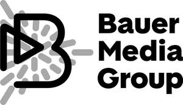

Trade Mark Journal No.2025/018 2 May 2025
UK00004181962 31 March 2025 (6,9,19,20,35,40,42)
Mark 1
Mark 2

- Class 6
- Sections and panels, all for use in advertising, advertising shelters and advertising structures; shelters and structures, all being portable; non-luminous and non-mechanical signs; advertising hoardings, boards and signboards; all made wholly or principally of metal; mountings of metal for glass; metal poster advertising pillars; parts and fittings for all the aforesaid goods.
- Class 9
- Neon signs, electric signs, mechanical, illuminated, reflective and luminous signs; advertising display apparatus (mechanical or luminous); parts and fittings for all the aforesaid goods; advertising display signs [mechanical or luminous]; computer software downloadable via the internet for monitoring and tracking advertising assets, including maintenance of assets; downloadable computer application software for providing access to contractual and service-level agreements, and messages to point of contact by means of cloud-based data management platform; downloadable computer application software to access media planning tools; Downloadable computer software for access to reports regarding contractual and service-level agreements by means of cloud-based data management platform; downloadable computer software, namely, software for the management and control of advertising assets by means of cloud-based data management platform; computer and/or mobile phone software for partners to manage advertising assets and related information by means of a digital platform, which is downloadable through mobile devices and web portals via communications networks.
- Class 19
- Advertisement columns; buildings and building panels for use in advertising; non-luminous and non-mechanical advertising signs; sections and panels for use in advertising, advertising shelters and advertising structures; shelters and structures, all being portable and for use in advertising; poster advertising pillars; advertising boards and hoardings; all made wholly or principally of non-metallic building materials; parts and fittings for all the aforesaid goods.
- Class 20
- Displays, stands and signage, non-metallic; inflatable plastic signs; plastic signboards; advertising signboards of wood; advertising balloons; advertising display boards; display stands; display furniture; mobile display boards; point of purchase displays.
- Class 35
- Advertising; out-of-home advertising services, namely, rental of advertising space, and preparing and placing of advertisements for others; hire of advertising boards, aids, billboards, equipment, hoardings and materials; rental of digital billboards; market research for advertising; dissemination of advertising matter; advertising by mail order; compilation of information into computer databases; publicity; public relations; publication of publicity texts; radio advertising; sales promotion; distribution of samples; preparation and production of advertising matter; television advertising; radio and television commercials; business management; business administration; office functions; advertising services provided via the Internet; production of television and radio advertisements; provision of business information; information relating to all the foregoing provided via telephone, mobile telephone, on-line from a computer database or the Internet; consultancy, advisory and information services relating to the foregoing.
- Class 40
- 3D reproduction services; digital printing; printing of advertising matter; printing; printing services; print finishing services.
- Class 42
- Providing a digital platform as a service (PAAS) featuring computer software platforms for use in advertising asset management, namely, access to contractual and service-level agreements, messaging to point of contact, media planning tools, reports regarding contractual and service-level agreements, and creating and issuing maintenance requests and work orders; electronic data storage; providing online non-downloadable web-based software for use in advertising asset management, namely, access to contractual and service-level agreements, messaging to point of contact, media planning tools, reports regarding contractual and service-level agreements, and creating and issuing maintenance requests and work orders.
Heinrich Bauer Verlag KG
Representative: Boult Wade Tennant LLP